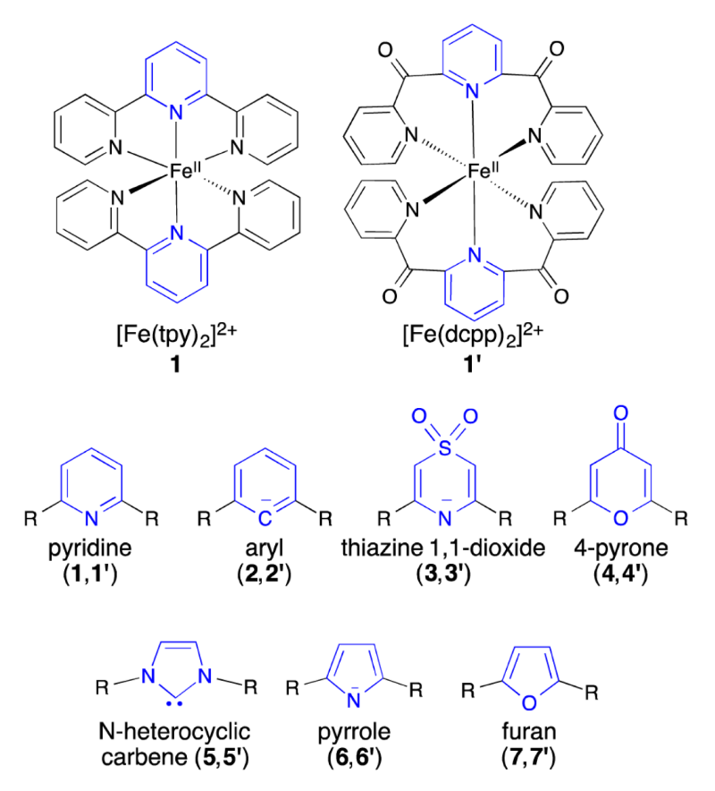

High Throughput Experimentation (HTE) refers to techniques that iterate experimental trials, typically at microscale. Our work on Fe(II) polypyridines is well suited to apply HTE in tandem with computational chemistry that guides the ‘rational design’ of our experimentation. This work builds on the computational work of Elena Jakubikova, DOI.
I am developing HTE synthesis techniques for Fe(II) polypyridines. Currently under investigation are microwave and electrochemical synthetic techniques. I will then use a variety of characterization methods to identify the electronic structure of these molecules. These include NMR, UV-vis spectroscopy, and MCD spectroscopy.
Density Functional Theory Methods
In parallel, I am exploring the computational chemistry related to Fe(II) Polypyridines. Density functional theory (DFT) techniques are computationally effecient, but can struggle to accurately predict the properties of metal centered complexes. I hope that the data that we develop from our experimental work will help further clarify the applicability of DFT in MLCT situations.
I am interested in Fe(II) polypyridines for some of many exciting possible use cases: molecular electronic switches, photocatalysis, and sensors.
 R=pyridine or -CO-pyridine. Jakubikova 2015.See Also:
Elena Jakubikova: Faculty Page · Tuning the Electronic Structure of Fe(II) Polypyridines via Donor Atom and Ligand Scaffold Modifications: A Computational Study
Susan Atlas: Faculty Page.
Rack Research Group: Homepage.
UNM CARC: Homepage.